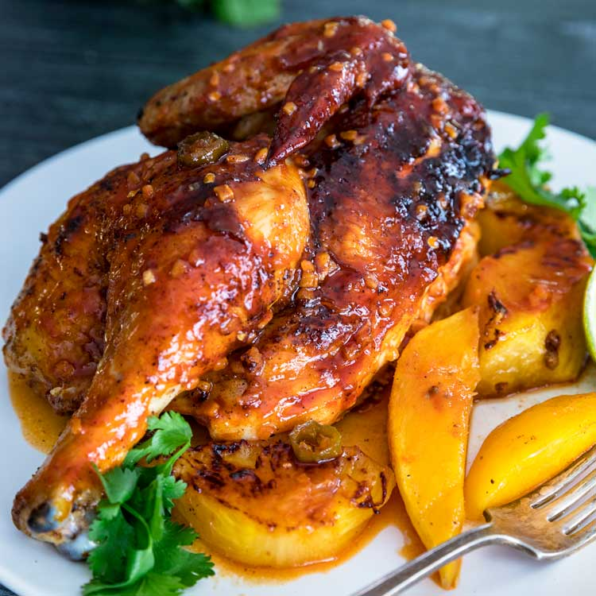
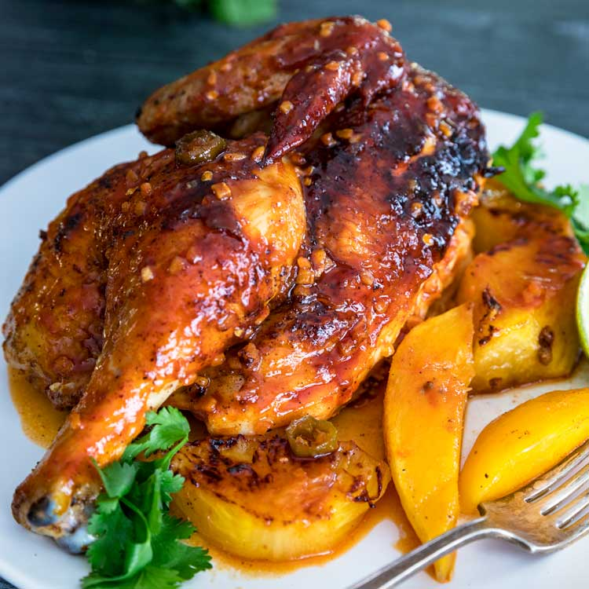
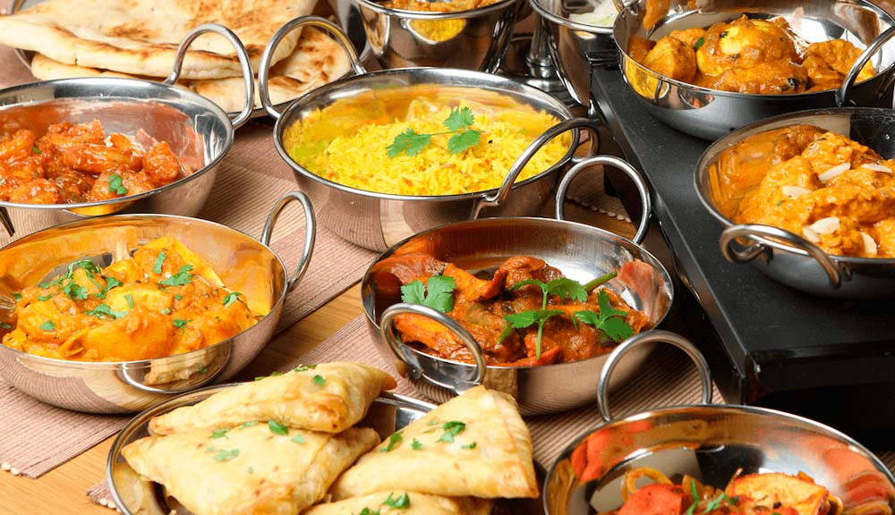
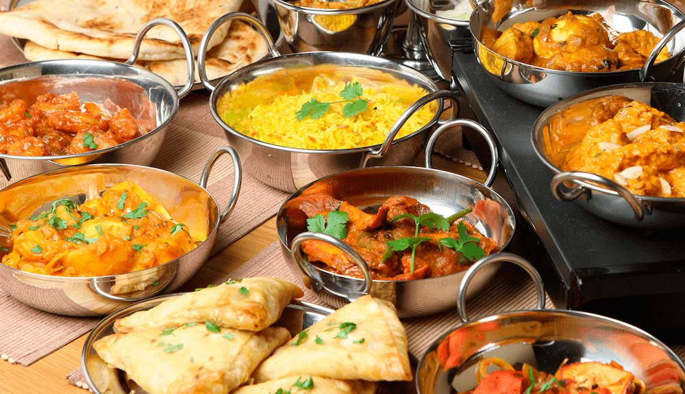

Indorsement by: Jamie Oliver
Jamie Trevor Oliver MBE (born 27 May 1975) is a British chef and restaurateur.He was the owner of a restaurant chain, Jamie Oliver Restaurant Group, which opened its first restaurant, Jamie's Italian, in Oxford in 2008. The chain went into administration in May 2019.

Indorsement by: Gordon Ramsay
Gordon James Ramsay OBE is a British chef, restaurateur, television personality and writer. He was born in Johnstone, Scotland, and raised in Stratford-upon-Avon, England. Ramsay founded his global restaurant group, Gordon Ramsay Restaurants, in 1997
Indorsement by: Siba Mtongana
Sibahle Mtongana, professionally known as Siba Mtongana is a South African celebrity chef and television presenter known as the host of the Cooking Channel show Siba's Table. She is currently a judge on Chopped South Africa, alongside Jenny Morris and David van Staden.
9TH Avenue Waterside : Spanish Cuisine
With a setting that locals will now proclaim suits the offering much better, it’s great to see that all the favourites are still there, plus an array of new seafood dishes that taste better with a view of the sea! Simple flavours are married beautifully with fresh ingredients in highlights such as langoustine with creamy orzo; delicate gin-cured salmon dotted with dill, trout roe and crème fraîche; and mussels in a sea-salty broth. A casual daytime menu caters to the lunch crowd. Try the crisp roasted free-range duck or the squid-ink linguine laced with tomato-and-fennel cream and topped with prawn tails and chilli pesto. A decadent chocolate hazelnut pot de crème and apple, pear and raisin bread pudding drenched in whisky sauce with honeycomb and honey ice cream make fitting endings to the feast.

Big Easy Wine Bar & Grill : Portuguese Cuisine
For starters, order the trio of lamb – masala-spiced mini boerie roll with tomato relish, lamb shoulder fritters in apricot chutney and a lamb slider with cumin raita. Other favourites are the rolled pork belly and the lamb ribs. For mains, the focus is on their selection of grills. The slow-cooked lamb curry bunny chow or braai platter for two – comprising chops, boerewors, steak and chicken wings – are good. Seafood includes a masala-spiced kingklip with sweet potato and coconut lemongrass sauce or Norwegian salmon with a fennel-and-white wine reduction and veg. There are also salads, sandwiches and wraps. For dessert, try an espresso and Amarula crème brûlée, passion fruit cheesecake with blueberry coulis and crushed lemon meringue curd, apple and raisin crumble, brandy and date pudding with butterscotch ice cream or Midlands cheeseboard.
Delfi : Greek Cuisine
Authentic Greek cuisine with a good selection of meze. Starter highlights are garlicky stuffed sardines, served with rocket and lemon juice; deep-fried halloumi in flaky phyllo pastry; and delicious squid tentacles with creamy skordalia dip. Other options include garlic grilled mussels, brinjal, halloumi and peppadew stack and anchovies cooked with rocket and onion. You’ll also find traditional vine leaf stuffed dolmades on the menu. For mains, the kilo of prawns with chips or rice is popular. Also on the menu is baked lamb shank (kleftiko), souvlaki chicken or beef kebabs with pita bread and tzatziki or garlic- and olive-oil- marinated prawn kebabs with rice. A specials menu changes depending on what’s fresh. For dessert, the baklava is sensational.
 

Dukkah : Durban Cuisine
The food here is a contemporary take on the melting pot of Durban, melding cuisines from all along the Spice Route. Kick things off with sensational deep-fried salt-and-pepper squid with a decent hit of chilli, served with roasted garlic mayonnaise. There’s also pickled fish with a bright coriander relish or crispy Kerala prawns with coconut oil and mustard seed. Mains include delicious grilled minted harissa prawns and a very satisfying caramelised red onion tartlet with rocket and goat’s cheese. End on banana fritters with vanilla ice cream, caramel and pistachio dust.
Mali's Indian: Indian Cuisine
Starters include the mushroom Manchurian – Indo-Chinese deep-fried mushrooms in a mix of sauces, the Gobi 65 – deep fried cauliflower florets marinated in South Indian spices, served with a mint jus or the prawn chilli – marinated prawns in Indian Chinese sauces. For mains, the prawn Chettinad is especially delicious with black pepper, red chillies, tamarind and curry leaf. Lamb Rogan ghosht – spicy lamb curry in garlic, ginger and ground spices, is also delightful. The various tandoori pot dishes are served with rice, naan or chips and the fish tikka with naan is good. For dessert, a small menu with ice cream and Indian sweets like sooji pudding and kulfi – a home-made frozen dairy dessert – is available.
 
